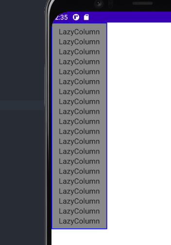

概述
许多应用程序需要显示项目的集合。本文解释了你如何在 Jetpack Compose 中有效地做到这一点。
如果你知道你的用例不需要任何滚动，你可能希望使用一个简单的 Column 或 Row（取决于方向），并像这样通过迭代列表来显示每个项目的内容。
@Composable
fun MessageList(messages: List<Message>) {
Column {
messages.forEach { message ->
MessageRow(message)
}
}
}
我们可以通过使用 verticalScroll() 这个 modifier 来让 Column 变得可滚动。更多信息见手势文档。
1. Lazy composables
如果你需要显示大量的项目（或一个未知长度的列表），使用像 Column 这样的布局会导致性能问题，因为所有的项目都会被组合和布局，无论它们是否可见。
Compose 提供了一组组件，它们只对组件视口中可见的项目进行组合和布局。这些组件包括 LazyColumn 和 LazyRow。
Info
如果你使用过 RecyclerView 组件，这些组件遵循相同的原则
顾名思义，LazyColumn 和 LazyRow 的区别在于它们的项目布局和滚动方向。LazyColumn 产生一个垂直滚动的列表，而 LazyRow 产生一个水平滚动的列表。
Lazy 组件与 Compose 中的大多数布局不同。Lazy 组件不接受 @Composable 内容块参数，允许应用程序直接撰写 Composable，而是提供一个 LazyListScope.() 块。这个 LazyListScope 块提供了一个 DSL，允许应用程序描述项目内容。然后，Lazy 组件负责根据布局和滚动位置的要求，添加每个项目的内容。
关键术语
DSL 是指特定领域的语言。有关 Compose 如何为某些 API 定义 DSL 的更多信息，请参阅 Kotlin for Compose 文档。
2. LazyListScope DSL
LazyListScope 的 DSL 提供了许多函数来描述布局中的项目。最基本的 item() 可以添加一个单项，而 item(Int) 添加了多个项目。
LazyColumn {
// 添加单个项目
item {
Text(text = "First item")
}
// 添加五个项目
items(5) { index ->
Text(text = "Item: $index")
}
// 添加其他单个项目
item {
Text(text = "Last item")
}
}
还有一些扩展功能，允许你添加项目的集合，如 List。这些扩展函数使我们能够轻松地移植上面 Column 的例子。
import androidx.compose.foundation.lazy.items
@Composable
fun MessageList(messages: List<Message>) {
LazyColumn {
items(messages) { message ->
MessageRow(message)
}
}
}
items() 的扩展函数还有一个变体，叫做 itemsIndexed()，它提供了索引。更多细节请参见 LazyListScope参考。
3. 内容填充
在 Lazy组件中，我们如果要设置 Lazy 组件里面内容的内边距时，我们可以使用 contentPadding 参数来进行填充
@Composable
fun MessageList() {
Box(Modifier.background(Color.Gray)){
LazyColumn(
modifier = Modifier.border(5.dp, color = Color.Blue),
contentPadding = PaddingValues(horizontal = 16.dp, vertical = 8.dp)
) {
items(20){
Text("LazyColumn")
}
}
}
}
在这个例子中，我们在水平边缘（左和右）添加 16.dp 的 padding，然后在内容的顶部和底部添加 8.dp。
请注意，这个 padding 是应用在 LazyColumn 里面的内容上的，而不是应用在 LazyColumn 本身。在上面的例子中，第一个项目将在它的顶部添加 8.dp 的 padding，最后一个项目将在它的底部添加 8.dp，所有项目将在左边和右边有 16.dp 的 padding。

4. 内容间距
要在项目之间添加间距，你可以使用 Arrangement.spacedBy()。下面的例子在每个项目之间增加了 4.dp 的空间。
@Composable
fun MessageList() {
Box(Modifier.background(Color.Gray)){
LazyColumn(
modifier = Modifier.border(5.dp, color = Color.Blue),
contentPadding = PaddingValues(horizontal = 16.dp, vertical = 8.dp),
verticalArrangement = Arrangement.spacedBy(10.dp)
) {
items(20){
Text("LazyColumn")
}
}
}
}

同样地，对于 LazyRow 也是如此。
5. Item 动画
如果你使用过 RecyclerView 组件，你会知道它能自动对 item 变化进行动画处理。Lazy 布局还没有提供这个功能，这意味着 item 的变化会导致一个即时的 snap。你可以关注这个 bug 来跟踪这个功能的任何变化。
6. Sticky headers (实验性)
请注意
实验性 API 在未来可能会发生变化，也可能被完全删除。
当显示分组数据的列表时，sticky header 模式很有帮助。下面你可以看到一个简单的例子，按指定的标题分组。

为了用 LazyColumn 实现 Sticky header，你可以使用实验性的 stickyHeader() 函数，提供标题内容。
@ExperimentalFoundationApi
@Composable
fun ListWithHeader() {
val sections = listOf("贡献者", "眠眠的粉丝")
LazyColumn {
sections.forEachIndexed{ index, section ->
stickyHeader {
Text(
text = section,
modifier = Modifier
.fillMaxWidth()
.background(Color(0xFFF2F4FB))
.padding(horizontal = 10.dp, vertical = 5.dp),
fontWeight = FontWeight.W700,
color = Color(0xFF0079D3)
)
}
when(index){
0 -> item{Contributors()}
1 -> item{TouchFish()}
}
}
}
}
为了节省篇幅，完整实现代码可以以下方式查阅
7. Grids (实验性）
请注意
实验性 API 在未来可能会发生变化，也可能被完全删除。
LazyVerticalGrid 可以实现类似于网格的效果

cells 参数负责控制单元格如何形成列。下面的例子显示了网格中的项目，使用 GridCells.Adaptive 将每一列设置为至少 128.dp宽。
@ExperimentalFoundationApi
@Composable
fun PhotoGrid(photos: List<Photo>) {
LazyVerticalGrid(
cells = GridCells.Adaptive(minSize = 128.dp)
) {
items(photos) { photo ->
PhotoItem(photo)
}
}
}
如果你知道要使用的列的确切数量，你可以转而提供一个包含所需列数量的 GridCells.Fixed 实例。
8. 对滚动位置做出反应
许多应用程序需要对滚动位置和 item 布局的变化做出反应和监听，Lazy 组件可以使用 LazyListState 来支持这种使用情况。
@Composable
fun MessageList(messages: List<Message>) {
// 记住我们自己的 LazyListState
val listState = rememberLazyListState()
// 把它提供给 LazyColumn
LazyColumn(state = listState) {
// ...
}
}
对于简单的使用情况，应用程序通常只需要知道第一个可见的 item 的信息。为此，LazyListState 提供了 firstVisibleItemIndex 和 firstVisibleItemScrollOffset 属性。
我们使用一个例子，即根据用户是否滚动过第一个项目来显示和隐藏一个按钮。
@OptIn(ExperimentalAnimationApi::class) // AnimatedVisibility
@Composable
fun MessageList(messages: List<Message>) {
Box {
val listState = rememberLazyListState()
val scope = rememberCoroutineScope()
LazyColumn(state = listState) {
// ...
}
// 添加一个用于是否显示按钮的代码
// 如果第一个可见的项目已经被移动过去，就显示这个按钮。
val showButton by remember {
derivedStateOf { // 尽量减少不必要的合成
listState.firstVisibleItemIndex > 0
}
}
AnimatedVisibility(visible = showButton) {
ScrollToTopButton()
}
// 伪代码，可用 FAB 来实现
ScrollToTopButton(
onClick = {
scope.launch {
listState.animateScrollToItem(0) // 点击返回第一项
// 你可以在后面的章节中看到这个方法
}
}
)
}
}
注意
上面的例子使用 derivedStateOf() 来减少不必要的合成。了解更多信息，请参见副作用文档。
当你需要更新其他 UI 的 composables 时，直接在 composables 中读取状态是很有用的，但也有一些场景不需要在同一个 composables 中处理事件。一个常见的例子是，一旦用户滚动过某个点，就发送一个分析事件。为了有效地处理这个问题，我们可以使用一个 snapshotFlow()。
val listState = rememberLazyListState()
LazyColumn(state = listState) {
// ...
}
LaunchedEffect(listState) {
snapshotFlow { listState.firstVisibleItemIndex }
.map { index -> index > 0 }
.distinctUntilChanged()
.filter { it == true }
.collect {
MyAnalyticsService.sendScrolledPastFirstItemEvent()
}
}
LazyListState 还通过 layoutInfo 属性提供了关于当前正在显示的所有项目以及它们在屏幕上的界限的信息。更多信息请参见 LazyListLayoutInfo 类。
9. 控制滚动位置
除了对滚动位置做出反应外，应用程序能够控制滚动位置也很有用。LazyListState 通过 scrollToItem() 函数和 animateScrollToItem() 函数支持这一点，前者 "立即 "锁定滚动位置，后者则使用动画进行滚动（也被称为平滑滚动）。
注意
scrollToItem() 和 animateScrollToItem() 都是 suspend 函数，这意味着我们需要在一个协程中调用它们。关于如何在 Compose 中这样做的更多信息，请参阅协程文档
@Composable
fun MessageList(messages: List<Message>) {
val listState = rememberLazyListState()
// 记住一个协程作用域，以便能够启动
val coroutineScope = rememberCoroutineScope()
LazyColumn(state = listState) {
// ...
}
ScrollToTopButton(
onClick = {
coroutineScope.launch {
// 滚动到第一个项目的动画
listState.animateScrollToItem(index = 0)
}
}
)
}
10. 大型数据集（paging）
Paging 库可以让应用程序能够支持大型项目列表，在必要时加载和显示列表的一小块。Paging3.0及以后的版本通过 androidx.paging:paging-compose 库提供 Compose 支持。
注意
Compose 只支持 Paging 3.0 及以后的版本。如果你正在使用早期版本的 Paging 库，你需要先迁移到 3.0。
为了显示分页内容的列表，我们可以使用 collectAsLazyPagingItems() 扩展函数，然后将返回的 LazyPagingItems 传给我们 LazyColumn 中的 items()。类似于视图中的分页支持，你可以在数据加载时通过检查项目是否为空来显示占位符。
import androidx.paging.compose.collectAsLazyPagingItems
import androidx.paging.compose.items
@Composable
fun MessageList(pager: Pager<Int, Message>) {
val lazyPagingItems = pager.flow.collectAsLazyPagingItems()
LazyColumn {
items(lazyPagingItems) { message ->
if (message != null) {
MessageRow(message)
} else {
MessagePlaceholder()
}
}
}
警告
如果你使用 RemoteMediator 从网络服务中获取数据，请确保提供真实大小的占位项。如果你使用一个 RemoteMediator，它将被反复调用以获取新的数据，直到屏幕被内容填满。如果提供小的占位符（或者根本没有占位符），屏幕可能永远不会被填满，而你的应用程序将获取许多页的数据。
11. Items Key
默认情况下，每个 item 的状态都是根据该 item 在列表中的位置来确定的。然而，如果数据集发生变化，这可能会导致问题，因为改变位置的 item 会失去任何记忆中的状态。如果你想象一下 LazyRow 在LazyColumn 中的情景，如果该行改变了 item 的位置，用户就会失去他们在该行中的滚动位置。
注意
如果你想了解更多 Compose 如何记住状态的，请参阅这篇文档
为了解决这个问题，你可以为每个项目提供一个稳定而唯一的密钥，为密钥参数提供一个块。提供一个稳定的键可以使 item 状态在数据集变化时保持一致。
@Composable
fun MessageList(messages: List<Message>) {
LazyColumn {
items(
items = messages,
key = { message ->
// 返回 item 的一个稳定的且唯一的键
message.id
}
) { message ->
MessageRow(message)
}
}
}
注意
所提供的任何密钥必须能够被存储在一个 Bundle 中。关于哪些类型可以被存储，请看该类的信息。